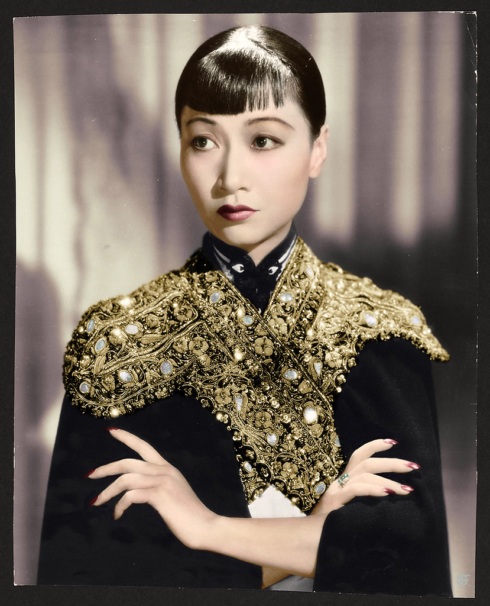

Tropes, Stereotypes, Yellowface, and Typecasting—all have been present since the beginning of Hollywood. The depiction of Asians in Hollywood films is oftentimes overt with harmful clichés and stereotypes, with women depicted as dragon ladies, China dolls, or tiger moms, and the men depicted as emasculated and salacious. Despite this rough beginning of Asian representation within Hollywood, in more recent years, more authentic and innovative portraits of the Asian American experience have been breaking into mainstream media.
The timeline below focuses on Asian American representation in Hollywood, and the slow improvement from clichés and stereotypes to positive roles beyond their race.
1914 - Kintaro Hayakawa (b. 1889) stars in “The Typhoon,” which seals his status as the first Asian sex symbol among women, despite the fictional murder of his lover.
1915 - Hayakawa stars in “The Cheat;” audiences see the first interracial movie kiss between Hayakawa and a white woman, who he later brands with an iron.
1918 - Hayakawa, fed up with his stereotypical roles, leaves the industry to form his own Haworth Pictures Corp, releasing 19 films over the next four years.
1922 - Anna May Wong (b.1905) stars in “The Toll of the Sea” at 17. Wong would become the most notable Asian American actress, though her contributions to the industry were not appreciated until nearly a century after her birth.

1930 - The Hays Code (Will H. Hays) goes into effect, which largely censored what could be shown to audiences, including interracial relationships. The ban against miscegenation remained in California law until 1948.
1931 - Hayakawa returns to Hollywood, starring in his sound debut “Daughter of the Dragon” with Wong.
1937 - Wong auditions for “The Good Earth,” arguably the first positive depiction of Asian women on screen, but loses the role to Luise Rainer, a white woman in yellowface.
Click here to learn more about yellowface in media.
1937 - Sabu Dastagir (b. 1924) stars in the titular role of “Elephant Boy” at the age of 13. Known as simply Sabu, the young boy would continue to star in comical roles such as this one.
Major Milestones for Asian Americans in Hollywood
1958 –
Miyoshi Umeki wins best supporting actress for her performance in Sayonara.
1993 –
Joy Luck Club film released. Was the first Hollywood film with an all-Asian cast.
2000 -
First Asian male (Jackie Chan) and first Asian female (Lucy Liu) to host Saturday Night Live.
2018 –
Sandra Oh was nominated at the Emmys for Best Actress and Crazy Rich Asians premieres as the first Hollywood film with an all-Asian cast in 25 years.
2019 –
Sandra Oh is the first person of Asian descent to co-host the Golden Globe Awards in its 76-year history.